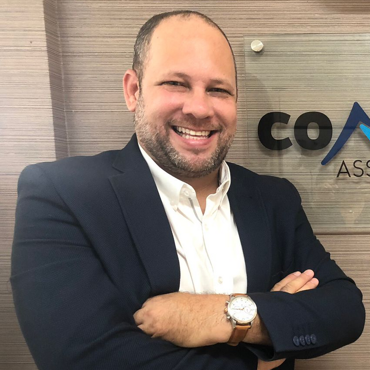

Marcello Fernandes
Sócio e diretor da empresa Consultivos Assessores e Contadores Ltda.
Contador e Empresário | Consultor e especialista em Redução Tributária e Incentivos Fiscais, e tenho o prazer de ser o fundador e sócio da Consultivos Assessores e Contadores Ltda. Formado em Técnico em Contabilidade pelo Liceu de Artes e Ofícios de Pernambuco, graduado em Ciências Contábeis pela Universidade Paulista de São Paulo – UNIP, Pós-graduado em Direito Tributário e MBA em Comércio Exterior pela mesma instituição. Graduando em Análise e Desenvolvimento de Sistema (ADS) pela Cesar School.
Resumo
Atualmente sou contador, empresário, executivo e fundador de empresas nas áreas de consultoria e assessoria contábil, tributária e departamento pessoal, especializado em projetos de benefícios fiscais empresariais. Atuo nesse setor desde 1994, quando iniciei minha carreira na área como menor aprendiz e estagiário. Ao longo dos anos, adquiri experiência e conhecimentos valiosos, o que me permitiu liderar várias equipes ao longo de minha trajetória profissional em diversas empresas.
Fundei minha primeira empresa, a Fractal Consultoria e Serviços Ltda, em 2002, e conciliei essa empreitada com minha atuação na Primo Schincariol Indústria de Cervejas e Refrigerantes do NE S/A. Posteriormente, assumi completamente o cargo de CEO da Fractal, consolidando-me como um dos profissionais mais conceituados, respeitados e renomados no estado de Pernambuco, no que tange em captação de empresas e investidores para atuarem na região nordeste, promovendo por meio de elaboração de projetos para obtenção de benefícios fiscais e locacionais junto aos estados e munícipios, promovendo e fomentando renda e desenvolvimento na região.
Ao longo dos anos, fundei outras empresas, incluindo a Consultivos Assessores e Contadores Ltda, que atualmente assumiu todos os clientes da Fractal Consultoria. Essa nova empresa representa um marco importante em minha trajetória profissional, fortalecendo ainda mais minha expertise e ampliando meu alcance no mercado.
Síntese de Qualificações
Expertise em consultoria contábil, tributária e de departamento pessoal, aplicando conhecimento aprofundado da legislação fiscal e das práticas contábeis.
Experiência em lidar com benefícios fiscais, incentivos locacionais e projetos de incentivos, proporcionando vantagens competitivas para empresas.
Habilidades sólidas de fomentar novos investimentos de empresas e investidores no Nordeste do Brasil, identificando oportunidades e promovendo o crescimento econômico da região.
Coordenação de equipes multidisciplinares, oferecendo liderança eficaz e facilitando a colaboração para alcançar resultados excepcionais.
Análise financeira e elaboração de relatórios contábeis para fornecer informações estratégicas para tomada de decisões assertivas.
Garantia da conformidade fiscal, mantendo-se atualizado sobre a legislação tributária e aplicando-a de forma precisa para evitar riscos e maximizar os benefícios para as empresas.
Elaboração de planos de contas, balanços patrimoniais, demonstrações de resultado e fluxo de caixa, fornecendo uma visão clara e precisa da situação financeira das empresas.
Assessoria na elaboração de orçamentos e planos de negócios, fornecendo insights valiosos para impulsionar o crescimento e a rentabilidade.
Participação ativa em auditorias internas e externas, garantindo a precisão e a integridade dos registros contábeis e o cumprimento das normas e regulamentos.
Habilidades
Possuo uma ampla expertise em consultoria contábil, tributária e de departamento pessoal, aplicando meu conhecimento aprofundado da legislação fiscal e das práticas contábeis. Minha experiência abrange também a atuação com benefícios fiscais, incentivos locacionais e projetos de incentivos, proporcionando vantagens competitivas para empresas que buscam otimizar seus resultados.
Desenvolvi habilidades sólidas para fomentar novos investimentos de empresas e investidores na região Nordeste do Brasil, identificando oportunidades e promovendo o crescimento econômico local. Por meio de análises estratégicas e da aplicação de estratégias adequadas, busco impulsionar o desenvolvimento econômico da região.
Coordenei equipes multidisciplinares, oferecendo liderança eficaz e facilitando a colaboração entre os membros, com o objetivo de alcançar resultados excepcionais. Além disso, realizei análises financeiras detalhadas e elaborei relatórios contábeis, fornecendo informações estratégicas para auxiliar na tomada de decisões assertivas.
A garantia da conformidade fiscal é uma prioridade em meu trabalho, mantendo-me constantemente atualizado sobre a legislação tributária e aplicando-a de forma precisa, a fim de evitar riscos e maximizar os benefícios para as empresas que atendo. Parte desse processo envolve a elaboração de planos de contas, balanços patrimoniais, demonstrações de resultado e fluxo de caixa, fornecendo uma visão clara e precisa da situação financeira das organizações.
Ofereço assessoria na elaboração de orçamentos e planos de negócios, fornecendo insights valiosos para impulsionar o crescimento e a rentabilidade das empresas. Também participo ativamente de auditorias internas e externas, garantindo a precisão e a integridade dos registros contábeis, bem como o cumprimento das normas e regulamentos aplicáveis.
Formação Acadêmica
Formação: Formado em Técnico em Contabilidade pelo Liceu de Artes e Ofícios de Pernambuco.
Período de duração do curso: janeiro de 1992 até dezembro de 1994.
Endereço: Praça da República, 281 – Santo Antônio, Recife - PE, 50010-040.
Formação: Formado em Ciências Contábeis pela Universidade Paulista de São Paulo – UNIP – CAMPUS Recife - POLO IPESU/FAREC.
Período de duração do curso: junho de 2011 até dezembro de 2022.
Endereço: Rua São Miguel, 176 - Afogados, Recife - PE, 50770-720.
Formação: Formado pós-graduação Direito Tributário pela Universidade Paulista de São Paulo – UNIP – CAMPUS Recife - POLO IPESU/FAREC.
Período de duração do curso: abril de 2023 até fevereiro de 2024.
Endereço: Rua São Miguel, 176 - Afogados, Recife - PE, 50770-720.
Formação: Formado em MBA em Comércio Exterior pela Universidade Paulista de São Paulo – UNIP – CAMPUS Recife - POLO IPESU/FAREC.
Período de duração do curso: maio de 2023 até março de 2023.
Endereço: Rua São Miguel, 176 - Afogados, Recife - PE, 50770-720.
Em Formação: Formando em Análise e Desenvolvimento de Sistemas - ADS pela Cesar Scholl – CAMPUS Recife.
Período de duração do curso: janeiro de 2024 até junho de 2026.
Endereço: Avenida Cais do Apolo, 77 - Recife Antigo, Recife - PE, 50030-220.
Experiência Profissional
Empresa: SERCO-PROCESSAMENTO DE DADOS LTDA.
Endereço: Rua José Clementino, nº 64, Aflitos – Cidade do Recife, Estado de Pernambuco – CEP: 52.050-070.
Função exercida na empresa: Auxiliar de Contabilidade
Período trabalhado: Jun 1994 - Dez 1994
Empresa: RECIFE COMESTIVEIS LTDA.
Endereço: Rua Ernesto de Paula Santos, nº 183, Boa Viagem – Cidade do Recife, Estado de Pernambuco – CEP: 51.021-330.
Função exercida na empresa: Encarregado Setor Fiscal
Período trabalhado: Dez 1994 - Jul 1995
Empresa: TOURO AGROPECUARIA LTDA.
Endereço: Rua Regueira Costa, nº 276, Sala 05, Rosarinho – Cidade do Recife, Estado de Pernambuco – CEP: 52.041-050.
Função exercida na empresa: Auxiliar de Contabilidade
Período trabalhado: Dez 1995 - Mar 1996
Empresa: SEMPRE CONTABILIDADE LTDA.
Endereço: Avenida Conselheiro Rosa e Silva, nº 1460, Sala 306, Graças – Cidade do Recife, Estado de Pernambuco – CEP: 52.050-245.
Função exercida na empresa: Auxiliar de Contabilidade
Período trabalhado: Mai 1996 - Set 1996
Empresa: SIQUEIRA COMERCIO DE VEICULOS PECAS E SUCATAS LTDA.
Endereço: Avenida Recife, nº 2703, Estância – Cidade do Recife, Estado de Pernambuco – CEP: 51.350-670.
Função exercida na empresa: Contador Jr.
Período trabalhado: Ago 1996 - Jan 1997
Empresa: EXECUTE CONSULTORIA DE R. H. LTDA.
Endereço: Avenida João de Barros, nº 700, Santo Amaro – Cidade do Recife, Estado de Pernambuco – CEP: 50.100-020.
Função exercida na empresa: Analista Contábil
Período trabalhado: Jan 1997 - Mar 1997
Empresa: LF PRODUTIVIDADE & DESENVOLV EM RECURSOS HUMANOS LTDA.
Endereço: Rua Professor José Brandão, nº 389, Conj. 203/206, Boa Viagem – Cidade do Recife, Estado de Pernambuco – CEP: 51.020-180.
Função exercida na empresa: Analista Fiscal e Contábil
Período trabalhado: Mai 1997 - Jan 1999
Empresa: PLENO CONSULTORIA E SERVICOS LTDA.
Endereço: Avenida Almirante Barroso, nº 438, Sala 408, Centro – Cidade de João Pessoa, Estado da Paraíba – CEP: 58.013-120.
Função exercida na empresa: Auditoria Fiscal
Período trabalhado: Mar 1999 - Mar 2000
Empresa: MASTERFOODS BRASIL ALIMENTOS LTDA.
Endereço: Fazenda Almirante, s/n, KM 02 BR 101 – Cidade de Barro Preto, Estado da Bahia – CEP: 45.625-000.
Função exercida na empresa: Analista Fiscal
Período trabalhado: Mar 2000 - Mar 2002
Empresa: PRIMO SCHINCARIOL IND DE CERV E REFRIG DO NORDESTE S/A.
Endereço: Avenida Padre Mosca de Carvalho, s/n, BR 101 Norte KM 13, Guabiraba – Cidade do Recife, Estado de Pernambuco – CEP: 52.490-010.
Função exercida na empresa: Analista Fiscal
Período trabalhado: Mar 2002 - Dez 2003
Empresa: FRACTAL CONSULTORIA E ASSESSORIA CONTABIL LTDA.
Endereço: Avenida Tancredo Neves, nº 220, 1º Andar, Jardim Paulista – Cidade do Paulista, Estado de Pernambuco – CEP: 53.409-190.
Função exercida na empresa: Fundador, Sócio e SEO - Contador e Consultor Tributário
Período trabalhado: Jun 2002 - Dez 2018
Empresa: CONSORCIO ALUSA-CBM.
Endereço: Avenida Francisco Alves de Souza, s/n, Lote 28, Quadra C, Centro – Cidade de Ipojuca, Estado de Pernambuco – CEP: 55.590-000.
Função exercida na empresa: Contador
Período trabalhado: Nov 2011 - Nov 2014
Empresa: CONSULTIVOS ASSSESSORES E CONTADORES LTDA.
Endereço: Rua General Joaquim Inácio, nº 790, Sala 708, Ilha do Leite – Cidade do Recife, Estado de Pernambuco – CEP: 50.070-495.
Função exercida na empresa: Fundador e CEO – Contador e Consultor Tributário
Período trabalhado: Jan 2019 – Atualmente
Cursos Profisionalizantes
TÉCNICO EM CONTABILIDADE pelo Liceu de Artes e Ofícios de Pernambuco – JAN/1992 até DEZ/1994.
ESPANHOL NÍVEL A2.1 – Instituto Cervantes do Recife/PE - OUT/2019 até ABR/2020.
ESPANHOL NÍVEL A2.2 – Instituto Cervantes do Recife/PE - MAI/2020 até AGO/2020.
ESPANHOL NÍVEL B1.1 – Instituto Cervantes do Recife/PE - NOV/2020 até ABR/2021.
ESPANHOL NÍVEL B1.2 – Instituto Cervantes do Recife/PE - MAI/2021 até OUT/2021.
ESPANHOL NÍVEL B2.1 – Instituto Cervantes do Recife/PE - SET/2022 até DEZ/2022.
ESPANHOL NÍVEL B2.2 – Instituto Cervantes do Recife/PE - MAR/2023 até MAI/2023.
FORMAÇÃO AGENTE DE REGISTRO - AR DOCCLOUD – MAI/2020.
FUNDAMENTOS DA GESTÃO DE CUSTOS – Fundação Getúlio Vargas – NOV/2011.
PLANEJAMENTO TRIBUTÁRIO –TRIBUTOS INDIRETOS - Pensar Cursos – MAR/2022.
MINICURSO COACHING EXECUTIVO E NEGÓCIOS - Pensar Cursos – MAR/2022.
ASSÉDIO MORAL E SEXUAL NO TRABALHO - Instituto Legislativo Brasileiro – MAR/2022.
PRODUTIVIDADE - Pensar Cursos – ABR/2022.
CONCEITOS E DINÂMICAS DE GRUPO EM ORIENTAÇÃO PROFISSIONAL - Pensar Cursos – ABR/2022.
HABILIDADES PARA EMPREENDER - Pensar Cursos – ABR/2022.
MINICURSO DE ANÁLISE DE INVESTIMENTOS - Pensar Cursos – ABR/2022.
NOÇÕES DE DIREITO TRIBUTÁRIO - Pensar Cursos – ABR/2022.
Idiomas:
Português – Nativo
Inglês - Intermediário
Espanhol – Fluente
Interesses Pessoais/Hobies
Esportes – Futebol e Educação Física, Cinema, Mercado Financeiro e Tecnologia.